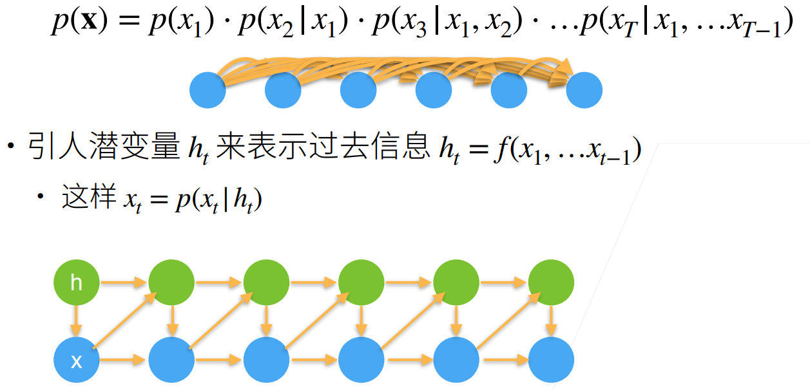

机器学习随笔 - 李沐&&邱
训练集、验证集、测试集
训练集：用来训练模型的参数，对应的评价是“训练误差”
验证集：用来测试不同超参数下模型效果，选择超参数
测试集：用来测试模型，对应的评价是“泛化误差”
注意，训练集和验证集不能有交叉，测试集在整个模型训练中只能用一次。也就是先选定超参数用训练集训练模型，然后用验证集评估，再改变超参数，用训练集训练，再用验证集评估，选择最好的超参数放在测试集上测试一次。
K折交叉验证：
对于一组选定的超参数，把训练集分成K份，训练K次，每次都用不同的K-1份训练，剩余一份用来做验证集，最后K个验证集结果取平均来评估这组超参数。
这样做是因为原本验证集和训练集应当55开，但是实际中没那么多数据让你做验证集，训练还不够用呢，所以这样子折中一下。
欠拟合和过拟合
自回归序列模型
自回归模型是用数据预测数据本身。图片分类是用图片预测标号，标号和图片不是一种东西。
序列模型是指当前数据和之前观察到的数据相关（图片分类不同图片之间就是独立的）。
序列模型的关键就是给定\((x_1,x_2,..., x_{t-1})\)来预测\(x_t\)，也就是
如何计算\(p(x_t|x_1, x_2, ..., x_{t-1})\)
如何计算\(p(x_t|f(x_1, x_2, ..., x_{t-1}))\)
方案一：马尔可夫假设
\(x_t\)只和之前的\(\tau\)个数据相关，预测\(x_t\)只需要\(x_{t-\tau},...,x_{t-1}\)
则建立一个输入是\(\tau\)维特征，输出是\(x_t\)的模型。不然参数量会随着序列变长越来越多。
方案二：潜变量模型
用一个变量来表示所有历史信息，这样，历史信息再长，它也是一个数据。
\(h_t=f(x_1,...,x_{t-1})\)
\(x_t=p(x_t|h_t)\)
建立两个模型，分别用来更新\(h_t\)和\(x_t\)
模型一： \(h_{t+1}=m(x_t, h_t)\)
模型二：\(x_{t+1}=n(x_t, h_{t+1})\)
